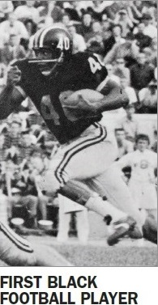
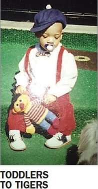
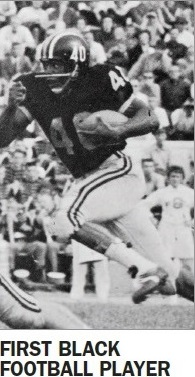
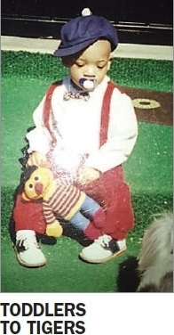

LATEST NEWS
-
WINNINGEST Take a look at the record behind Missouri’s most winningest coach, Gary Pinkel, before he says goodbye to the team ths season
-
FIRST BLACK FOOTBALL PLAYER Norris Stevenson left his mark by leading the Missouri team to a win over Oklahoma during the 1960 season.
-
TODDLERS TO TIGERS This future Missori Tiger was “the epitome of having middle child syndrome,” according to his mother.

 



© Copyright 2016 The Columbia Missourian, 221 South 8th Street Columbia, MO | Privacy Policy